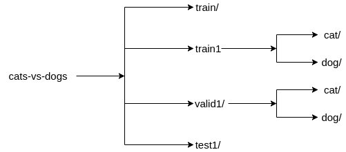
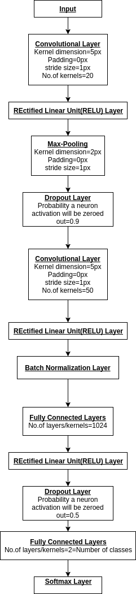

Cortex is a machine learning library written in Clojure from the ground up. But its key feature is its neural network library. The code is optimized to be run in GPUs, if you have Nvidia's CUDA toolkit installed. On the other hand, if you do not have GPUs and/or CUDA toolkit, all computations will be carried out on CPU. Details of using GPUs are available at the bottom of this page.
The purpose of this tutorial is to show, through an example, how to use Cortex's neural network library to create a Convolutional Neural Network(CNN) from scratch. Before I dive into the details, you can have a look at Cortex's Github repository and the functions implemented in it.
During the summer of 2017, I figured out how to use Cortex for training a CNN by working on a simple cat-dog classifier. The dataset I used is available in Kaggle here. Only the train.zip file contains labelled images, so I used them for training and calculating test accuracy. This file contains 25000 images of cats and dogs, from which, I used 60% for training, 20% for validation and 20% for testing.
First of all, the libraries required for this project need to be mentioned in the Clojure project folder's project.clj file, which looks something like this right after creating the project:
(defproject test "0.1.0-SNAPSHOT"
:description "FIXME: write description"
:url "http://example.com/FIXME"
:license {:name "Eclipse Public License"
:url "http://www.eclipse.org/legal/epl-v10.html"}
:dependencies [[org.clojure/clojure "1.8.0"]]
)
All libraries required have to be mentioned as an element of the vector held by the key :dependencies. These are the libraries we need:
[thinktopic/think.image "0.4.12"] ;;For image processing
[thinktopic/cortex "0.9.11"] ;;Contains functions to build Neural Networks
[thinktopic/experiment "0.9.11"] ;;Contains functions to build classifiers and regressors
[net.mikera/imagez "0.12.0"] ;;For image processing
CNN accuracy and training time can be affected by image size and color. For instance, smaller greyscale image matrices have fewer pixels and their color scheme is not complex, unlike their larger, colored counterparts. Since this project involves simple classification into two categories/labels, it is preferred to keep training images small and greyscale for better training speed and accuracy.
Hence, I preprocessed the 25000 images to greyscale and 52x52 dimension. After this, I created three folders, train1, valid1 & test1 where preprocessed training, validation and test images are stored respectively. Within train1 & valid1 are two further subfolders, cat & dog, which contain cat and dog pictures respectively. I kept train, train1, valid1 & test1 folders in cats-vs-dogs folder. This folder should be in the top directory of the project folder. In cats-vs-dogs, the file directories look like this:
Here is the code for image preprocessing:
;;These are the libraries we need
(require '[clojure.java.io :as io]
'[mikera.image.filters :as filters]
'[mikera.image.core :as imagez]
'[clojure.string :as string]))
;;Takes in directory to folder
;;Returns a collection of all images within said folder
(defn- gather-files
[path]
(->> (io/file path)
(file-seq)
(filter #(.isFile %))))
;;Takes in collection of images
;;Returns a collection containing elements in this form: [file-index [image image-label]]
(defn- indexed-data-label-seq
[files]
(->> (map (fn [file] [file (-> (.getName file) (string/split #"\.") first)]) files)
(map-indexed vector)))
;;Takes in: i)Output directory ii)New image size iii)An element representing an image from
;;the collection generated by above function
;;Returns: Saves image in output directory after turning it greyscale and scaling it to
;;image-size x image-size dimensions
(defn img-preprocess
[output-dir image-size [idx [file label]]]
(let [img-path (str output-dir "/" label "/" idx ".png")]
(when-not (.exists (io/file img-path))
(println "> " img-path)
(io/make-parents img-path)
(-> (imagez/load-image file)
((filters/grayscale))
(imagez/resize image-size image-size)
(imagez/save img-path)))))
;;Similar to img-preprocess function. But this function will be used
;;for preprocessing and saving test images. But name format of these
;;images will be just like that of images in train folder
(defn img-preprocess-test
[output-dir image-size [idx [file label]]]
(let [img-path (str output-dir "/" label "." idx ".png")]
(when-not (.exists (io/file img-path))
(println "> " img-path)
(io/make-parents img-path)
(-> (imagez/load-image file)
((filters/grayscale))
(imagez/resize image-size image-size)
(imagez/save img-path)))))
;;Takes in: i)directory of folder containing colored, unresized images ii)directory
;;where processed training images will be saved iii)directory where validation images
;;will be saved iv) directory where test images
;;will be saved v) New image width and height
;;Returns: Generates processed training, validation and test image dataset in 3:1:1 ratio using
;;functions above
;;Tip-'pmap' is used for parallelizing image preprocessing, hence speeding up
;;the process.
(defn build-image-data
[original-dir training-dir valid-dir test-dir img-size]
(let [files (gather-files original-dir)
pfiles (partition (int (/ (count files) 5)) (shuffle files))
test-labels (indexed-data-label-seq (first pfiles))
valid-labels (indexed-data-label-seq (first (rest pfiles)))
training-labels (indexed-data-label-seq (apply concat (rest (rest pfiles))))
train-fn (partial img-preprocess training-dir img-size)
valid-fn (partial img-preprocess valid-dir img-size)
test-fn (partial img-preprocess-test test-dir img-size)]
(dorun (pmap train-fn training-labels))
(dorun (pmap valid-fn valid-labels))
(dorun (pmap test-fn test-labels))))
;;This line will run the above function:
(build-image-data "cats-vs-dogs/train" "cats-vs-dogs/train1" "cats-vs-dogs/valid1" "cats-vs-dogs/test1" 52)
This is the CNN architecture I came up with:
Here is the code for training the CNN cat-dog classifier:
;;These are the libraries we need:
(require '[clojure.java.io :as io]
'[mikera.image.core :as imagez]
'[cortex.experiment.util :as experiment-util]
'[cortex.nn.layers :as layers]
'[cortex.experiment.train :as train]
'[cortex.nn.network :as network])
;;Storing data directory
(def data-folder "cats-vs-dogs/")
;;Storing training data directory
(def train (str data-folder "train1"))
;;Storing validation data directory
(def validation (str data-folder "valid1"))
;;Storing vector of class names(from folder names in training directory).
(def categories
(into [] (map #(.getName %) (.listFiles (io/file train)))))
;;Storing number of classes
(def class-count
(count categories))
;;Storing a mapping from class name to index and index to class name
(def class-mapping
{:class-name->index (zipmap categories (range))
:index->class-index (zipmap (range) categories)})
;;An example preprocessed image
(def first-test-pic
(->> (io/file train)
(file-seq)
(filter #(.isFile %))
(first)))
;;Storing width of example image
(def image-width (.getWidth (imagez/load-image first-test-pic)))
;;Creating and storing training dataset for use by CNN architecture
(def train-ds
(experiment-util/infinite-class-balanced-dataset
(experiment-util/create-dataset-from-folder train class-mapping :image-aug-fn (:image-aug-fn {}))))
;;Creating and storing validation dataset for use by CNN architecture
(def valid-ds
(experiment-util/create-dataset-from-folder validation class-mapping ))
;;IMPORTANT!
;;CNN architecture is being defined here.
;;Takes in: i) image width ii) image height iii) number of classes
(defn initial-description
[w h classes]
[(layers/input w h 1 :id :data)
(layers/convolutional 5 0 1 20)
(layers/relu)
(layers/max-pooling 2 0 2)
(layers/dropout 0.9)
(layers/convolutional 5 0 1 50)
(layers/relu)
(layers/max-pooling 2 0 2)
(layers/batch-normalization)
(layers/linear 1024)
(layers/relu :center-loss {:label-indexes {:stream :labels}
:label-inverse-counts {:stream :labels}
:labels {:stream :labels}
:alpha 0.9
:lambda 1e-4})
(layers/dropout 0.5)
(layers/linear classes)
(layers/softmax :id :labels)])
;;Note-In the last RELU layer, :lambda is the learning rate, which is set at 0.0001.
;;Converts the network into a computational graph
(def net (network/linear-network (initial-description image-width image-width class-count)))
;;This function trains the network
(defn final-train
"Takes in size of individual batch of images the network is trained
on per epoch and number of epochs the network is trained over"
[batch-size epoch-no]
(train/train-n net train-ds valid-ds :batch-size batch-size :epoch-count epoch-no))
;;Training the network over 2 epochs with a batch-size of 100 images
(final-train 100 2)
Once the code bove is run, it will train the model for two epochs. In each epoch, the training image dataset will be broken down to small batches of 100 images which will be individually used to train the network. After the network is trained with one batch, it is said that one iteration in a given epoch is complete. When the number of completed iterations is equivalent to number of batches, one epoch is said to be complete. At each epoch, the trained weights will be saved/updated in trained-weights.nippy file. If this file is kept and the training script is run again, training will resume from last epoch.
After training the CNN is complete and trained-network.nippy exists at the top directory of the project file, the model can finally be tested.
The script below uses the preprocessed images stored in the cats-vs-dogs/test1 directory to predict their labels. The predicted labels are then compared with true test image labels to return the accuracy score.
;;Libraries required for testing our CNN
(ns cortex.test
(:require [cortex.util :as util]
[cortex.nn.execute :as execute]
[mikera.image.core :as i]
[think.image.patch :as patch]
[clojure.java.io :as io]
[clojure.string :as string]
[mikera.image.filters :as filters]
))
;;Gets a collection of all images in test1 directory
(def files (filter #(.isFile %) (file-seq (io/file "cats-vs-dogs/test1"))))
;;For a given collection of files, returns a collection of [index [file label]] representing individual files
(defn- indexed-data-label-seq
[files]
(->> (map (fn [file] [file (-> (.getName file) (string/split #"\.") first)]) files)
(map-indexed vector)))
;;Converts a given image to an observation format(so it can be interpreted by the CNN)
(defn image-file->observation
[image]
{:labels ["test"]
:data
(patch/image->patch
(-> image (i/load-image) ((filters/grayscale)) (i/resize 52 52))
:datatype :float
:colorspace :gray)})
;;A collection of true labels of test images
(def labels (map #(nth (nth % 1) 1) (indexed-data-label-seq files)))
;;A mapping of index to class name, where 0->"dog" and 1->"cat"
(defn index->class-name
[n]
(nth ["dog" "cat"] n))
;;Given a nippy file(which contains trained weights), makes predictions on test images
;;and returns a collection of predicted labels
(defn predict
[nippy]
(let [obs (map #(image-file->observation (first (nth % 1))) (indexed-data-label-seq files))
]
(map #(index->class-name (util/max-index (:labels %))) (execute/run nippy (into-array obs)))))
;;Reading nippy file containing trained weights
(def nippy
(util/read-nippy-file "trained-network.nippy"))
;;Iterating over true and predicted labels to calculate accuracy score in
;;predicting the test dataset.
(let [predicted (predict nippy)
actual labels]
(loop [idx 0
correct 0]
(if (== (- (count actual) 1) idx)
(float (/ correct (count actual)))
(recur (if (= (nth predicted idx) (nth actual idx))
(inc correct)
correct
)
(inc idx))
)
)
)
Neural Network training and inferencing consist of linear algebra operations; matrix multiplications, additions, etc. Matrix dimension compatibility is important to ensure that the computer can carry out matrix operations without any error. For instance, a CNN image classifier trained on images of 52x52 dimensions cannot make inferences on images with dimensions 100x100. So all the data used to train and test a Neural Net should undergo the same preprocessing.
It is common to play around with the model hyperparameters(such as kernel dimensions, stride, number of layers) to improve performance. So during these form of experimentations, it is very important to remove/isolate the trained-network.nippy file from the top directory of the project to ensure that the model starts training from scratch with the new set of hyperparameters.
As mentioned earlier, training and inferencing on local computers without Graphical Processing Units(GPUs) will be carried out on CPUs. This means the entire process will be very slow. GPUs can do matrix operations much faster and with more efficiency than traditional CPUs. So serious deep learning is usually carried out on machines with multiple GPUs(such as computer clusters).
To run this project on a cluster, open terminal on mac/linux and type these commands:
#To upload code & data to cluster:
# cd into directory above project directory and run:
scp -r project username@cluster.url:/some/directory/in/cluster
# eg: scp -r project x10@polestar.mit.edu:/home/work/
# Enter cluster password when prompted
# To log into the cluster:
ssh username@cluster.url
# eg: ssh x10@polestar.mit.edu
# Enter cluster password when prompted
In order to run the code on clusters, you need to be aware of job-passing implementations, which vary from cluster to cluster. You can contact its respective administrator or refer to its documentation for more information on this topic. Important: If you run resource intensive tasks like this on clusters which do have job-passing implementations, but do not use it, the admin will very likely stop your process. Doing so will slow down processes being run by others on the cluster, which will come off as very rude.
For Hampshire College students: You can run this project/similar projects on Tesla, one of our clusters. But you first need to set up an account by emailing Josiah Erikson(wjerikson@hampshire.edu). Right now, there is no job-passing implementation on it(not that I am aware of), so you can use lein run for now. But if you are unsure, definitely contact Josiah.
This demo project is available for download from my github repository.
Stanford University has some amazing resources on CNNs for visual recognition, especially their CS231n course website.
Moreover, their classes are recorded, which are available on youtube.
If you have any questions regarding this project or topics related to it, you can contact me via email: tde15@hampshire.edu